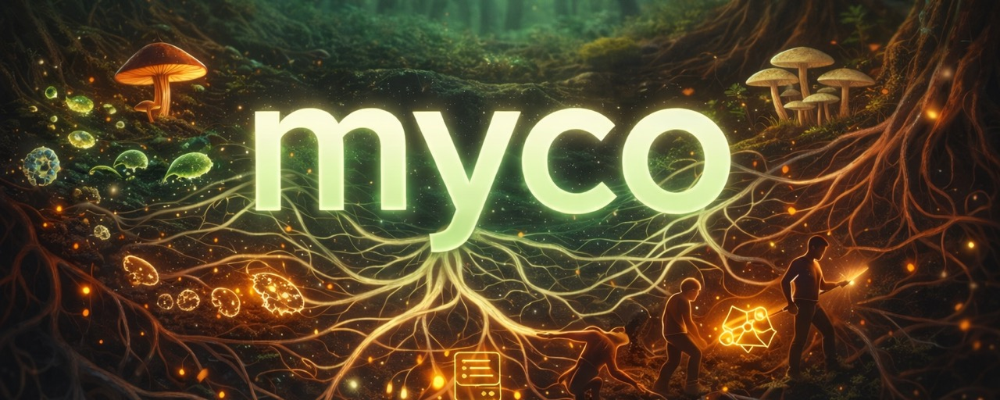
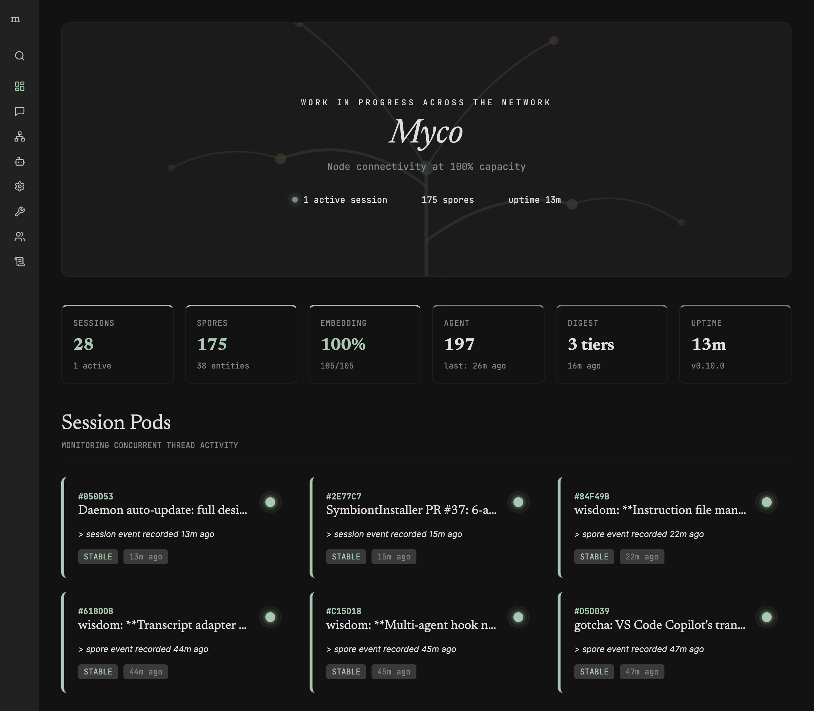

01 · Capture
Every session, deposited as spores.
Rich multi-agent local data collection — your prompts, tools, agent summaries, plans, screenshots. Browse and search semantically via a local daemon. Agents access via local MCP.
Capture what your team learns. Turn it into skills your agents follow. Evolve them as your code does.

One install, any agent. Myco auto-detects the coding agents you already use and installs hooks for each.
Three things, working together beneath the surface of every session — so your agents get smarter as your team does.
Rich multi-agent local data collection — your prompts, tools, agent summaries, plans, screenshots. Browse and search semantically via a local daemon. Agents access via local MCP.
Myco's intelligence agent surveys your vault for procedural patterns with cross-session evidence, drafts a SKILL.md, runs it through quality gates, and — with your nod — promotes it to .agents/skills/.
Teammates' agents contribute and share project intelligence, synchronized automatically through a Cloudflare-backed worker. Cloud MCP exposes the same knowledge to managed agents beyond your laptop.
Myco ships a local web dashboard. Configure providers, approve skill candidates, monitor session pods, and tail daemon logs — all on localhost, all yours.
Live view of every concurrent agent thread on your machine — spore events, wisdom extractions, stability signals. Click any pod to walk its full activity trail.
Approve or dismiss auto-generated skill candidates. Every change is recorded as lineage — what was in generation N, and why it's different in N+1.
Four states — active, idle, sleep, deep-sleep — so Myco costs nothing on idle laptops and wakes instantly when you sit back down.

Every session deposits spores. Myco digests them, proposes plans, and — with your nod — promotes them into skills your agents follow on the next run.
Myco's agent scans spores, sessions, and plans for procedural patterns with cross-session evidence. One-off observations don't qualify.
myco:survey≥ 0.7 confCandidates land in the Skills dashboard with rationale and confidence scores. You stay in the loop on what becomes canon for your project.
skills / candidateshuman-in-loopA SKILL.md is drafted from the source material, staged, and passed through quality gates before being promoted to .agents/skills/.
.agents/skills/gen 1As your code evolves, so do your skills. Drift is detected, stale content rewritten, oversized skills split, outdated skills retired — with full lineage.
lineage recordedgen N+1Skills install once to the .agents/skills/ standard and symlink into each agent's native directory — so every teammate works the way your best session did.
Your project's standard of excellence gets enforced, not just documented. The happy path becomes the default path.
Skills rewrite themselves as the code does. Every generation records rationale, content snapshot, and source IDs — a complete audit trail.
Every teammate's agents benefit from the collective intelligence. Runs on Cloudflare's free tier for small teams. Local databases remain the source of truth — the cloud store is a queryable mirror.
Hooks-based integration. No wrappers, no forked CLIs — the agent keeps its voice, Myco captures its surface.
Nine guides cover everything from your first myco init to running a Collective across dozens of projects.
Install, run myco init, and configure providers. The happy path from zero to your first spore.
What gets captured, how the daemon manages itself, and what to do when things go sideways.
Read guide SkillsThe four stages — survey, approve, generate, evolve — and the SKILL.md format Myco uses.
Read guide TeamProvision the Cloudflare worker, connect teammates, fan out searches, and configure cloud embeddings.
Read guide IntegrationExpose your knowledge to Anthropic Managed Agents, N8N workflows, and other cloud-resident agents.
Read guide ScaleConnect multiple Myco-enabled teams into a single Collective with cross-project agent access.
Read guide AdvancedThe intelligence pipeline — phases, providers, task scheduling, and per-phase model overrides.
Read guide ReferenceFull reference for the MCP tools Myco exposes — search, recall, remember, graph traversal, skills.
Read guide AdvancedHow Myco integrates with each coding agent's hooks, transcript formats, and native skill directories.
Read guideMyco runs entirely on your machine by default — no account, no vendor lock-in. Layer team sync and a Collective on top when you're ready.